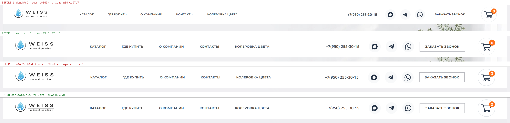
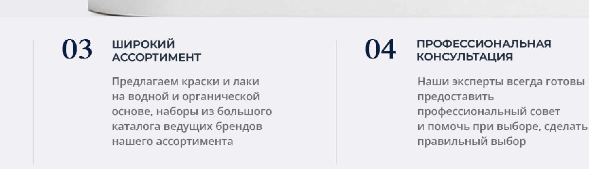
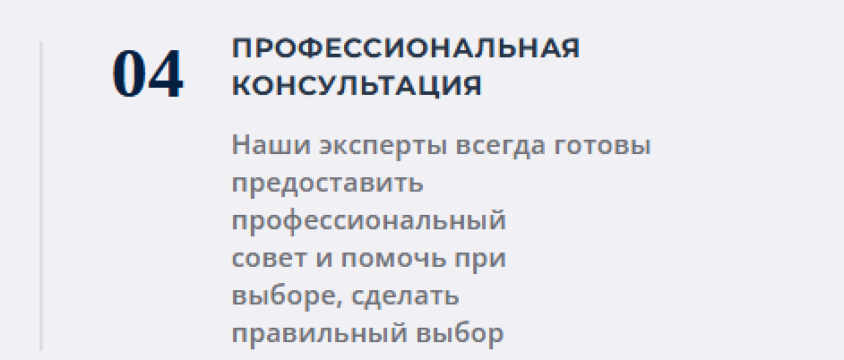
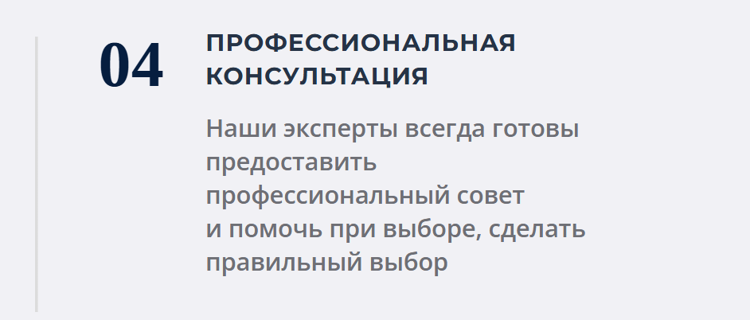

Каждая страница подгоняется под высоту окна своим масштабом (на 2600×1300 — от 0,88 до 1,01). Шапка и подвал были заданы в фиксированных пикселях, поэтому умножались на масштаб каждой страницы: логотип на главной выходил 177,7 px и стоял в 68 px от края, на контактах — 202,9 px и 75,6 px. На страницах, которым ужимать нечего, шапка не менялась — отсюда «есть страницы, где это не наблюдается».
Теперь в режиме подгонки шапка и подвал считаются в процентах окна,
как поля контента: --u: 1cqw вместо 25,6 px. Масштаб
страницы на них больше не влияет.
| Страница | До: x | До: ширина | После: x | После: ширина |
|---|---|---|---|---|
| Главная (масштаб 0,884) | 68,0 | 177,7 | 75,2 | 201,8 |
| Контакты (масштаб 1,009) | 75,6 | 202,9 | 75,2 | 201,8 |
| Каталог (масштаб 0,909) | 69,5 | 182,7 | 75,2 | 201,8 |
| Остальные 17 страниц | 68,0–75,6 | 177,7–202,9 | 75,2 | 201,8 |
Проверено на 20 страницах в окнах 2560×1440, 2560×1300, 2600×1300, 2544×1300, 2936×1560, 2936×1300, 3840×2065 и 1920×1080: внутри одного окна логотип и левое поле одинаковы на всех страницах. На 2560×1440 всё как в макете: логотип 201 px в 60 px от края. Страницы «Счёт» и «Оплата» (включая «Оплату картой») идут без шапки по макету.

Стили приходили вовремя (на стенде они кэшируются на 7 дней и всё равно блокируют отрисовку). Прыгало другое: масштаб считался до загрузки шрифтов, по запасному шрифту. Главная показывалась в масштабе 0,98, а через ~0,3 с, когда подгружались шрифты, пересчитывалась в 1,0 — на экране это выглядело как рывок логотипа и полей. На коротких страницах пересчёта не было, поэтому там «почти не заметно».
Теперь страница показывается только после загрузки шрифтов, уже с окончательным масштабом. Замеры: главная 2560×1440 — показ сразу в масштабе 1,0 (было 0,98 → 1,0); 2560×1300 — сразу 0,887 (было 0,87 → 0,887); 2936×1560 — сразу 1,063 (было 1,055 → 1,063). После показа масштаб больше не меняется: проверены 20 страниц в восьми размерах окна. Логотип при любом масштабе остаётся 201,8 px в 75,2 px от края (2600×1300).
Если шрифты не загрузятся, страница всё равно откроется — через 2 с после запуска скрипта и не позже 4 с по таймеру в head.
В карточке 04 принудительные переносы стояли не там, где в макете: после «профессиональный» и после «сделать». Браузер получал строку «предоставить профессиональный» — она шире колонки (275 px при 2560), поэтому переносилась ещё раз, и текст занимал 6 строк вместо 5.
Теперь переносы остались только после «готовы» и после «совет», остальное ложится само — как в макете, 5 строк.



Проверено на стенде в окнах 2558×1303 и 2560×1440 — строки совпадают с макетом. В более узком окне 1920×1080 все четыре карточки получают на строку больше — колонки там пропорционально уже; это одинаково для всех карточек, не только для 04.